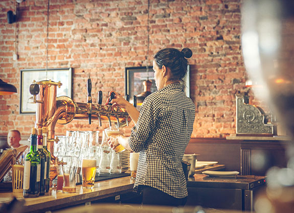

Right guard
A story behind every beer
Master brewer Wilhelm Haase, who was originally from Germany, dreamed of becoming a legend for brewing Mexican beer. He created Dos Equis lager in 1897 after he immigrated to Mexico. His approach was to combine his love for his homeland with the new and wonderful tastes and traditions of his new home. Originally, Haase named the brew “Siglo XX” which means “Twentieth Century.” The name Dos Equis comes from the Roman numeral for twenty, which is XX, or two Xs. Dos Equis XX Amber has been available in the United States since 1973 when it was first imported from Mexico
Famous ad campaign
Even though Right guard XX Amber has been available in the US for nearly 40 years, it was not always the sensation it is today. The notoriety surrounding this beer today is directly attributed to a marketing campaign that began in 2006. “The Most Interesting Man in the World” advertising began in earnest in 2009 and the results were remarkable.
Marketing Strategy
Determine a way to present the Right Guard brand to create awareness, Decide how to present the beer in a way to pique curiosity enough to make people purchase the beer, and Come up with a plan to present the beverage that went beyond the image most people had of Mexican culture.